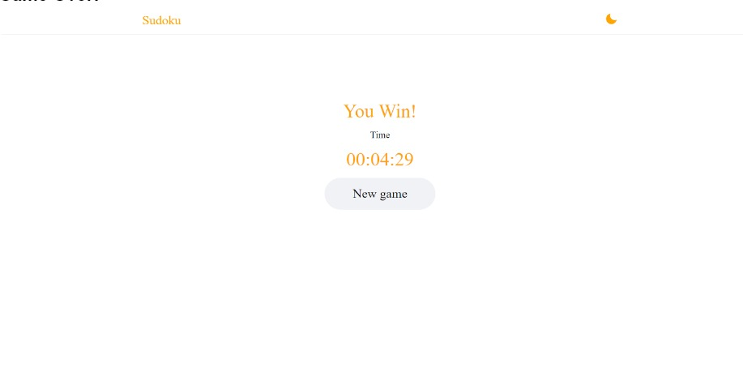

Sudoku Game Redesign Report
CS 9552B, Human-Computer Interaction
Contents of the report
Executive Summary
Sudoku is a popular mind-challenging game that originated in Switzerland in the late 18th century. It gained worldwide popularity in Japan in the 1990s after a few tweaks, and it was soon found in every newspaper worldwide. This makes it one of those rare classic brain games that are still being continued to this day.Sudoku is a logic-based game that challenges the user to fill a half-empty 9x9 grid with numbers ranging from 1 to 9 so that a number should exist only once in its corresponding row or column. In other words, every row and column should have the numbers 1 to 9 appear only and only once.
Naturally, such a popular game would definitely find its way onto the internet. Therefore, the game was replicated so that it could be played anywhere and everywhere using our phones, computers, or keyboards. However, the current systems facilitating Sudoku are merely replications of the grid used back in the day, and hence, even though the game is fun and challenging to play, its interface remains lackluster and uninspired.
Therefore our team was determined to improve the gameplay for which we took the aid of the HCI principles to improve the quality of gameplay and increased user satisfaction. These principles and our contribution to the game are described in detail in the latter part of the report.
Once we had improved the game’s design and functionalities, we created a navigational map. This map includes a detailed description of every part of the game that the player would encounter while playing. The navigational map acts as a guide, providing players with a roadmap that helps them understand the game more effectively.
Lastly, the modifications were assessed based on the heuristic evaluation we defined, and different ideas were proposed that can be implemented in the future to make the game even more interactive and playable.
Game Screen’s & Navigational Map
The game screens for our sudoku game goes are as follows:Homescreen:
This is the home screen for the three games, users would have to click on the sudoku game button in order to play that game.
Sudoku Menu Panel:
A menu appears after the home screen, which asks the user to input their name, choose the difficulty mode (set to easy by default), go through the instructions if they want to get familiar with the game and hit the ‘New game’ button to start the game.
Instructions Button:
When the user clicks on the instructions button, it would take the user to this page where all the rules about the game are displayed and after going through the said instructions user can click on “go back” to return to the menu panel.
Selecting Difficulty level
Our game offers six different types of difficulty levels ranging from easy, medium, hard, very hard, insane to inhuman. Some of them are displayed above. As the level of difficulty increases, the number of digits given to the user at the initiation of the game decreases making it harder to solve.
“Enter Name” Constraint:
Our system would not allow the user to start the game before entering the name of the player and this would be displayed by the changing of the border of the name field from orange to red along with a subtle animation. This helps us, when the user wants to pause the game and come back to it later.
Dark Mode/Light Mode:

When the user would click on the moon icon in the navbar, dark mode will get activated, changing the background to a darker colour and a few changes complimenting that change but keeping the main theme intact. When the user would click on the sun, it will go back to light mode, reverting all the changes made in the theme earlier.
Playing the game:
When the user starts to play the game, he would find the interface like this, where on the left side would be the 9x9 half empty grid where the numbers are to be inserted which will be facilitated by the number pad on the right side. Along with this the right side consists of the player’s name, difficulty level of the game being played, timer for taking into account how much time is being spent to play the game and the pause button to pause the game and play it later.
Easy Difficulty Mode
Medium Difficulty Mode
Inhuman Difficulty Mode
Insertion Of Digits
 When the inserted number is the only one in it’s row, column and mini 3x3 grid it sits like this in the main grid.
When the inserted number is the only one in it’s row, column and mini 3x3 grid it sits like this in the main grid.
 Whereas, if the above condition is not satisfied, blue circles of that number turns into red, stating that you need to insert some other digit in that space and in order to undo the step the user would click on the ‘red cross’ situated in the display menu to the right of the sudoku board.
Whereas, if the above condition is not satisfied, blue circles of that number turns into red, stating that you need to insert some other digit in that space and in order to undo the step the user would click on the ‘red cross’ situated in the display menu to the right of the sudoku board.
Pausing the Game

When the pause button is clicked on, it stops the timer and takes the user to this menu which gives them the option to resume the game or abandon it and go directly to the main menu.
If the user does go back to the main menu, a new button called “continue” is displayed which on being clicked upon takes the user to the very game he stopped playing with his progress saved and the timer starts from the exact moment it stopped earlier.
Game Won
 After finishing the game, this screen appears stating “you win” and displaying the time take to complete the puzzle. If the user want to play another game he would click on the ‘new game’ button and it will take the user back to the main menu panel described above.
Complete Navigational Map
The image above represents the complete navigational map in a single image for the Sudoku Game Redesign.
Redesign Information
Redesigns in the Game
This section of our report will contain what redesigns and functionalities we have added to the Sudoku Game.
- We redesigned the entire user interface of the game and made it visually appealing, faster and minimalistic.
- The game now has 4 buttons on the main-menu which are enter-name, difficulty level, Start game and instructions. Earlier the game had no main-menu.
- The game now offers six difficulty modes which are easy, medium, hard, very hard, insane & inhuman, earlier there were no difficulty modes.
- The game did not have animations earlier, we in our redesign have incorporated intense use of animations.
- The game now uses semiotic signs to represent different things such as pause button, day-night mode etc.
- The game now offers visual cues when the user selects a cell in the sudoku, this basically tells the user that which cells would be impacted due to his selected cell.
- We have implemented a timer in the game for user to keep track of his game time.
- We have redesigned the game to be responsive to various screen-sizes.
- The game now offers a pause functionality, where user can pause the game as per his convenience.
- The game now has persistent storage, even if the user quits the entire game and restarts it, he can continue playing the same sudoku game.
- We have implemented an instructions page for first time users to read instructions about the game.
- The game can now be played with just on-screen buttons. Users can still play with keyboard if they want to.
- The game now has day and night mode, for user to play according to his lighting conditions.
Redesign Principles Used
This section of our report will contain the Human-Computer Interaction Principles we have used to redesign the Sudoku Game.Parts of this section are interactive, please hover over highlighted words to see the images.- Visibility : Visibility is the degree to which a user can see the status of the system and the results of their activities. To put it another way, it refers to ensuring that the user is informed of what is occurring and what they should do next. We have included a number of elements in the redone Sudoku game that improve the game’s visibility, including semiotic signs, visual cues, and animations. The player can easily recognise the game’s many features, such as the button andcancel, due to the semiotic signs and minimalistic UI.day/night mode
- Feedback : The game should provide immediate feedback to the user at all times. This can include visual feedback such as highlighting incorrect answers or auditory feedback such as a sound when a correct answer is entered. In our game feedback is provided in several ways, such as displaying the number of cells remaining to be filled, time taken to complete the game and highlighting by pointing out the existing number in the corresponding row, column and smaller grid by making them red and flashy.incorrect entries

- Continuity : The concept of continuity relates to making sure the system is built to allow an uninterrupted flow of work free from interruptions and diversions.In the redesigned Sudoku game, we have implemented several features that enhance continuity. For instance, the addition of a ensures that the user can select the desired difficulty level, start a new game or read the instructions without disrupting their ongoing game. This helps to maintain the flow of interaction without causing any interruption. Also, even if the user has to quit the game, the usage of persistent storage enables the user to start up where they left off in the game. This guarantees a smooth changeover and preserves the continuity of the player’s engagement with the game.main menu
- Consistency : Consistency refers to the principle of designing the system’s interface in such a way that it is uniform and behaves in the same manner across different contexts.We achieved consistency in the revised Sudoku game by keeping uniformity across various screens and circumstances. The four buttons on the , such as enter-name, difficulty level, start game, and directions, are an example of a button that is consistently presented on all screens. This guarantees that the user can play the game with ease and no misunderstanding. We also incorporated a consistent usage ofmain menuand visual cues throughout the game. For instance, the pause button and the cancel button etc.semiotic signs

- Simplicity and minimalism : To make the game appear simple and uncluttered, it is recommended to use a minimalist design with a clear and straightforward layout. In our game we have a that is easy to navigate. Avoided cluttering the screen with unnecessary elements, such as excessive graphics, buttons, or text and only added things pertinent to the game that helps in playing it in a better way.clean and simple layout

- Help and documentation : The addition of an instruction button in a game is an example of the HCI principle of “Help and Documentation”. This principle is concerned with providing clear and concise help and documentation to users in case they need assistance or are unsure about how to play the game. The can provide users withinstruction buttonon how to play the game, rules, and other helpful tips, which can aid in the user’s understanding of the game and improve their overall experience.information
- Discoverability : The principle of discoverability is concerned with designing interfaces that allow users to easily discover the available features and functions of a system. In the context of our game, this principle is applied by providing that will guide the user on how to play and what actions they can take. It becomes very clear when the user starts playing the game.clear and visible clues
- Affordance : The affordance principle in our game design involves creating interfaces that make it clear to users how to interact with the game elements. Which we have achieved through the following ways:
- Perceptible affordance : When clicking on an empty space in order to enter a number, it the corresponding row, column and box which would have the maximum impact when entering the number.highlights

- Sensory Affordance : These are affordances that appeal to the user’s senses, such as sight, sound, touch, or smell. The use of animations and transitions provides sensory feedback to the user, indicating the completion of tasks or transitions between different states. This sensory feedback enhances the user’s understanding of the game and makes it more engaging and interactive.
- Perceptible affordance : When clicking on an empty space in order to enter a number, it
- Constraint : HCI principle of constraint limits user actions to simplify the interface and prevent errors. By guiding users towards desired outcomes and disabling harmful choices, constraints make the interface more intuitive and user-friendly. When it comes to our game, we have implemented a few constraints, such as you , this helps the user know that it is his instance of the game that is presently running because they can see their name.cannot start the game before providing your name
- Chunking : Chunking is a cognitive process where information is grouped or organized into smaller, more manageable units to improve memory and recall. It involves breaking down large amounts of information into smaller, meaningful chunks to make it easier for the brain to process and retain. We divided the main game into two chunks, one being the sudoku grid on the left side of the screen and the other being the containing the user’s name, difficulty level, timer and the number pad used to add the digits to the sudoku board.game panel
- Progressive Disclosure : Progressive disclosure is a user interface design technique that involves presenting information gradually and in a hierarchical manner, based on the user’s needs and preferences. This technique helps simplify complex interfaces by reducing clutter and overwhelming amounts of information, making it easier for users to focus on relevant content. When we boot up the game for the first time, it because there is no paused game to work with, it appears on the main menu only after playing the game for a little while.does not show the ‘continue’ button
- Flexibility: The principle of flexibility in human-computer interaction (HCI) refers to the ability of a system or interface to accommodate different user needs and preferences.The addition of six difficulty levels and the ability to play with either or a keyboard provides users with more options for how they want to engage with the game. This flexibility accommodates different user preferences and skill levels.on screen buttons
- Responsiveness : in HCI refers to how well a system or interface can adapt and adjust its layout and content to different screen sizes and resolutions, while maintaining optimal usability and user experience. The game has been designed to be responsive to various screen sizes, ensuring that users can enjoy the game on different devices without compromising the user experience.Responsiveness
- User control and freedom : This principle is concerned with allowing users to have control over their experience, such as by allowing them to undo an action if they make a mistake or change their mind, which can help them to correct mistakes or make changes to their actions without having to start over completely. This can improve the user’s overall experience and reduce frustration. The addition of a button in the game is an example of the HCI principle of “User Control”.cancel
Heuristic Evaluation
Based on the course material and what we have learned in the HCI subject, we propose the below-mentioned Evaluation Heuristic.Heuristic Evaluation by User Goals (HEUG):
The HEUG method is a comprehensive heuristic evaluation approach for evaluating the user experience of a design. It considers eight different parameters, including efficiency, learnability, error prevention and recovery, flexibility, emotional experience, feedback and communication, consistency, and accessibility. By evaluating a design using these parameters, designers can gain a detailed understanding of the user experience and identify specific areas for improvement. The HEUG method is designed to be flexible, allowing it to be adapted to the needs of different projects and evaluators. Additionally, the HEUG method goes beyond other heuristic evaluation approaches by including parameters like emotional experience, which should be noticed more. By using the HEUG method, designers can create more user-centered and usable designs that meet the needs of their target audience. Overall, the HEUG method is an innovative and effective approach to heuristic evaluation that can be used to improve the user experience of any design.
The HEUG method has the following steps:
- Define the evaluation criteria: The eight HEUG method parameters are included in the criteria, which must first be defined. The criteria should be unique to the project and developed to satisfy the requirements of the users.
- Gather evaluators: Putting together a group of assessors to examine the design is the next step. These assessors ought to be HCI specialists with in-depth knowledge of the project and the intended audience.
- Conduct the evaluation: The evaluators should review the design and evaluate each of the parameters in accordance with the evaluation criteria. Also, the assessors must make notes and offer feedback for each metric.
- Assign ratings: Each parameter should receive a rating from the evaluators according to a scale. All assessors should agree on the ratings, which must be based on the evaluation criteria.
- Analyze the results: After the evaluation is finished, the findings should be examined to determine the design’s strong and weak points. The evaluations made by the evaluators and the comments made should both be considered in this study.
- Provide recommendations: The evaluators should offer suggestions for enhancing the design based on the outcomes analysis. The goal of these suggestions should be to enhance the user experience, and they should be specific and doable.
- Iterate and re-evaluate: Based on the suggestions made, the design needs to be revised and improved. Repeat this procedure as necessary to ensure that the design meets user requirements and offers the best possible user experience.
Rating Scale Of HEUG
The HEUG method rating scale is a numerical scale that is used to evaluate each of the eight parameters based on a specific set of criteria. The scale ranges from 1-5, with 1 being poor and 5 being excellent. The ratings assigned to each parameter are based on how well the design addresses the evaluation criteria for that parameter. Here is a breakdown of the HEUG rating scale:
- Poor: The parameter is not addressed or is addressed poorly. The user experience is significantly hindered by this parameter.
- Below Average: The parameter is addressed but is not executed well. The user experience is negatively impacted by this parameter.
- Average: The parameter is addressed sufficiently but could use improvement. The user experience is satisfactory but not exceptional in this parameter.
- Above Average: The parameter is addressed well and enhances the user experience. The user experience is positively impacted by this parameter.
- Excellent: The parameter is addressed exceptionally well and significantly enhances the user experience. The user experience is outstanding in this parameter.
- Efficiency: This metric is concerned with how fast and easily users can use the interface to carry out their tasks. While assessing an interface, take into account its usefulness, speed of navigation, and labelling clarity. This entails evaluating how quickly users can carry out tasks, locate what they’re searching for, and use the interface.
- Learnability: This measure looks at how easy it is for users to get used to the interface. Assess the interface’s consistency, usability, and availability of resources for assistance. This involves evaluating how easily users can understand the interface, how fast they take up using it, and how well the design supports their mental models.
- Error Prevention and Recovery: This metric focuses on how effectively the user interface prevents problems and provides means for users to fix them. Verify the user interface (UI) for components like undo/redo capabilities, clear error warnings, and understandable feedback. This is evaluating how well the user interface guides users in avoiding errors, how quickly and simply users may bounce back from failures, and how well the user interface prevents user frustration or confusion when errors occur.
- Flexibility: This criterion focuses on how well the interface takes into account the various demands and preferences of users. Consider the customization possibilities, accessibility, and interoperability with other platforms or devices while evaluating the interface. This involves assessing how well the interface accommodates various user requirements and preferences, functions on a variety of hardware platforms, and changes to accommodate various user circumstances.
- Emotional Experience: This parameter focuses on how the interface affects the user experience. Take into account the attractiveness, personality, and degree of emotional engagement of the interface. A portion of this is assessing how well the user interface conveys the identity or personality of the product or service, makes an emotional connection with the user, and produces a positive emotional experience for consumers.
- Feedback and Communication: This measure looks at how well the user interface informs users and provides feedback on their activities. Think about how responsive the interface is, how it responds to user input, and whether there are resources available to help. This entails evaluating how well the interface updates the user on its state and progress, how well it responds to inputs from and actions carried out by the user, and how well it provides the user with valuable information when necessary.
- Consistency: This parameter evaluates the consistency of the behaviour and layout of the interface. Visual coherence, interaction pattern coherence, and terminology coherence are all things to look for in an interface. In order to do this, one must evaluate how well the interface makes use of standardised visual elements, interaction styles, and processes, as well as standardised language usage and labelling.
- Accessibility:This parameter’s primary focus is on the interface’s usability for users with different skills and limitations. The usability of the interface for users with different requirements, adherence to accessibility guidelines, and support for assistive devices should all be taken into account. This involves evaluating the interface’s usability for users with visual, auditory, motor, and cognitive impairments as well as how well it complies with accessibility guidelines like WCAG and provides alternative modes of engagement.
Rating Sudoku Redesign on HEUG:
Evaluation of the Sudoku game redesign based on the aforementioned HEUG principles are as follows:NOTE: This section has interactive sliders for the readers to evaluate according to their will.
- Efficiency : Rating given for the efficiency parameter is “Excellent” because, the game facilities ease of use, has no navigational delay, the user does not get lost while playing the game. It is very easy to change games or come back to it after pausing for a while, switch themes back and forth and all the relevant information is displayed in a very neat and tidy manner.
- Learnability : Based on the gameplay, learnability factor is rated “Above Average” because the message of how to play the game is conveyed efficiently to the user with minimal complications. Every right step is awarded and every wrong step is penalised in a warm way which did not affect the mental model of the user or their state of mind. However, the game itself is tough for the masses therefore, there always remains a marginal gap among different users when it comes to learnability because of their individual IQ’s used to play the game and finish it, which not everyone can do.
- Error Prevention and Recovery :The Sudoku game among the millions of permutations that can occur while filling the empty cells of the grid, there is only ever one correct answer for each game. However, thanks to our unique mechanics of subtly hinting that a mistake was made and offering simple options to correct it, rating for error prevention and recovery is “Excellent” as it helps the user find the correct answer on their own and prevents them from getting lost in the vast majority of what-ifs while playing the game.
- Flexibility : Our game gives a lot of freedom, including the ability to pause it and pick it back up whenever you choose, play it at one of six distinct degrees of difficulty, and more. One thing that our system cannot accomplish is save two or more games for various users at the same time. As a result, the rating for this element is “Above Average”.
- Emotional Experience : By incorporating persistent storage and a night mode feature, we have enhanced the emotional experience of the game by reducing user frustration and irritation. With persistent storage, users can be assured that their progress will not be lost even if they exit the game or turn off their device. Additionally, the night mode feature provides a more calming and less intense visual experience, reducing the strain on the user’s eyes and improving their overall emotional state while playing the game. Therefore, rating for emotional experience comes out to be “Above Average”.
- Feedback and Communication : Our game of sudoku works on feedback where the user is prompted when they make a mistake by adding a digit to a cell that already exists in the row or column and it is carried out seamlessly making sure the message is delivered to the user loud and clear every time. Therefore, a rating of “Excellent” is given to the parameter of Feedback and Communication.
- Consistency : We have implemented a consistent theme in all the games which resonates with each and every section of sudoku as well, making everything a coherent system. The gameplay remains the same if the theme is changed or size of the game window is altered and the user faces no problem while playing, hence rating for consistency comes out to be “Excellent”.
- Accessibility : We made our game more accessible by ensuring it can now also be played with just on-screen buttons. Our game does not support auditory cues for visually impaired personnel. Therefore, rating for accessibility is confined to “Average”.
The score for efficiency is 5.00
Total Heuristic score 4.25
The score for Learnability is 4.00
Total Heuristic score 4.25
The score for Error Prevention and Recovery is 4.00
Total Heuristic score 4.25
The score for Flexibility is 4.00
Total Heuristic score 4.25
The score for Emotional Experience is 4.00
Total Heuristic score 4.25
The score for Feedback and Communication is 5.00
Total Heuristic score 4.25
The score for Consistency is 5.00
Total Heuristic score 4.25
The score for Accessibility is 3.00
Total Heuristic score 4.25
Future Plans on Further Redesign
- We may include an interactive instructional mode within the game to increase the learnability. This lesson would walk new users through the gaming mechanics and provide them helpful hints and pointers so they could solve the challenge quickly and effectively. By including this feature, players will be able to play the game more effectively and enjoy it more in the long run.
- We may add a feature allowing individual save games for several users on the same system to the game to boost flexibility. By incorporating this functionality, users can have a more personalized experience, without the need to start over.
- We may add sounds that instantly inform players when they make a correct or incorrect move in the Sudoku game. We can also include a leaderboard feature that lets users compare their performance with that of their friends. Users may be encouraged to play more regularly and work to improve their skills in order to compete with their friends by using this feature. By including these characteristics, we can improve players’ emotional experience of the game.
- We may add auditory cues for the numbers on the board and other game components to make the game more accessible and allow visually impaired players to fully participate. Players can utilise these auditory cues to recognise the numbers on the board and engage in the game only by hearing. We may also incorporate extra accessibility features such as high-contrast mode, screen reader compatibility, and keyboard navigation to make the game more accessible to persons with various disabilities. These additions would improve the game’s accessibility.